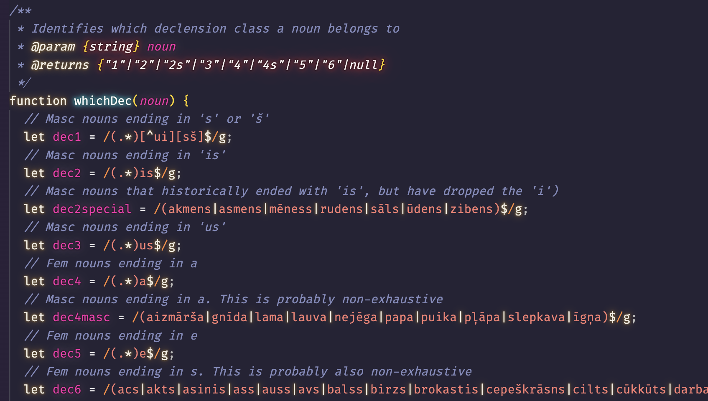
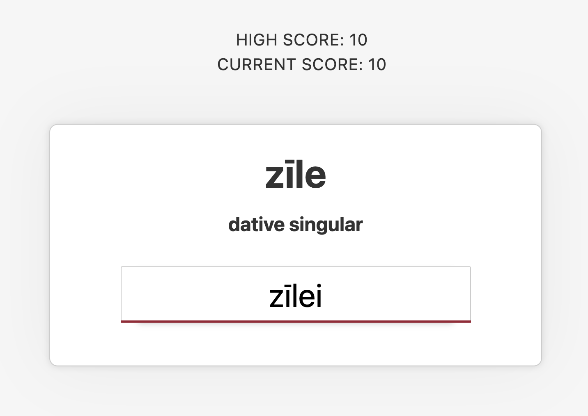

It's OK to abandon your side-project .
The web industry is full to the brim with tales of side-projects that grew into successful businesses and, like many of us, I'll often find myself tinkering away on an idea or three after I've finished with my day-job. Whilst it's definitely an enticing prospect, working on a side-project is not always sunshine and Lambos though – sometimes they just don't work out. If you're reading this, there's a chance that you might have recently abandoned (or are considering abandoning) a side-project. Many of us have been there. Hell, the neglected side-project has become something of a developer-meme at this point.
That said, I often get emails from beginner developers looking for advice and one of the growing themes I've noticed recently is concern that they they aren't shipping their side-projects as quickly or numerously as they would like. That anxiousness is totally understandable. When the prevailing wisdom of developer hustle-culture is "always be shipping" and tech-interviewers will routinely measure candidates by the output of their extra-curricular coding, those abandoned side-projects might not feel so funny anymore. That doesn't sit right with me. We hear about all the side-project success stories, but what if we talked more openly about the ones that tanked? Many of us do retrospectives at work, but personal projects don't get the same treatment. Instead, why don't we shine a light on all the time we spent on projects that didn't go anywhere? The seemed-like-a-good-idea-at-the-time abandonware; the graveyard of node_modules
folders still haunting our development environments.
I'd like to talk about a side-project I worked on a while ago; one that I abandoned the same day it was deployed.
The background .
My partner is Latvian and, a few years back, I set out to learn her language. Being from a small country, detailed learning resources for the Latvian language are a bit sparse but I made decent progress regardless. That was, until I discovered that Latvian has grammatical cases . If you've never encountered a "case" before, here's a little primer:
A language like English uses word order and prepositions such as "for", "to" or "in" to add meaning to each word in a sentence. If the order is wrong, or you miss a preposition, the sentence might no longer makes sense. For example, "Tom gives the book to Anna" sounds natural whereas, "Tom the book to Anna gives" doesn't. Cases change this up a bit. Instead of relying on word order and helper words, the end of each word itself changes to show what it is doing within the sentence. To return to the same example sentences in Latvian, "Toms dod grāmatu Annai " (emphasis added to highlight the functional endings). Literally translated back to English, this sentence would be something like "Tom-subject gives book-object Anna-towards ".
Linguistically, cases are a pretty cool system because you no longer need to care about word order. As a learner though, this is a problem because you do need to care about all of the various endings for each word you learn. Latvian has seven cases in total, two grammatical genders (each with three separate conjugation patterns), and nouns can be singular and plural. The TL;DR is that's something like 84 possible endings to memorize.
So, cases can be a lot for a first-language English speaker. Thankfully though, I'm also a developer and therefore I'm hardwired to think that I can solve everything with code. What if I could build a quiz app to help me learn noun endings? This smelled like a side-project 🚀
The approach .
I wanted to keep my app simple. Whilst I had a lot of other grammar to learn, I was only focusing on noun conjugations and that would help me whittle the initial concept down to an MVP . The quiz mechanism would present a series of Latvian nouns and the user would be required to conjugate the noun to the appropriate ending. To keep things interesting, the quiz would allow the user to make three mistakes before ending and I'd throw in a simple high-score system to keep track of how I'd performed in past quizzes.
The tech stack would be simple too. At the time of planning, Svelte 3.0 was the new shiny so I decided to use it for my UI. I knew that I wanted to host everything on Netlify, so for the backend I'd write a couple serverless functions to present the questions and check the answers. The main list of nouns could be served from a static JSON file and, as I'd be the only user, I could safely persist previous quiz results and a high-score to local storage. I wouldn't need a database right now.
As for how I would actually check answers, that would take a bit of research. After extensively reading about the conjugation patterns and how the various types of nouns are classified, I decided that my simplest option would be to build a system that leaned heavily on Regex to strip noun stems and append the appropriate suffixes.

With a decent plan in place, I started to code.
The realisation .
After a full week of evenings working on the project, I put the finishing touches to the MVP. I deployed everything to Netlify and started my initial testing.

The UI was simple but passable and worked well on mobile devices. Quiz questions progressed smoothly and the session would end after three wrong answers, as designed. In between quizzes, the dashboard was correctly displaying stats for hits and misses on each word and the overall high-score was persisting between sessions. Happy that everything was working as planned, I cracked a beer and started training word endings.
It quickly became clear that my app had a really big problem that I hadn't anticipated. The quiz was far too easy. Worse still, if I didn't make 3 mistakes, the quiz would keep going indefinitely. It just wasn't fun to use.
I racked my brain for possible ways to make the quiz more fun but, eventually, the penny dropped: The issue couldn't actually be solved in code. It turns out that, in devising and coding all of the logic needed to test the various noun endings, I had passively learned the rules needed to form them.
Over the last week I had worked long evenings to research and build an app – with a target audience of one person – and I didn't really need to use it anymore. Oops.
Maybe the real treasure is the code we wrote along the way .
Out of all of my abandoned side-projects, this was the one that made me think differently. Even if I would never actually use the end 'deliverable', working on the project still indirectly achieved what I'd set out to do. That led me to an important realisation: we talk a lot about abandoned side-projects as "failed", but their success is really a matter of perspective.
Despite what some tech recruiters might have you believe, the success of a side-project doesn't need to be defined by a beautiful, shipped product. We work in a practical medium and any build experience, good, bad or abandoned, is still valid experience. If you are able to remove the pressure to ship and instead approach them like throwaway prototypes, side-projects become a great scratch pad for experimentation. As I found when building my Latvian app, even the act of writing code itself can be a successful tool for solving problems.
This is not all to say that we should dismiss the reasons these projects get abandoned – introspection is still important – but I find that focusing on the progress made can feel more constructive in the long-term. After abandoning my Latvian project, I dipped back into some of the other stalled side-projects languishing on my laptop. Where I'd previously grumbled over a string of failures and wasted time, I could now refocus on what had gone well. On one project, I could see where I'd first learned how to make an API in Go. Elsewhere I was impressed at how I had figured out how to work with GIS map data in Postgres. In another derelict directory, I saw not much more than a broken animation - one that I would later revisit and evolve into this website.
Wrapping up .
I still regularly work on side-projects but my perspective and motivations are different now. My advice to a beginner dev struggling with their side-projects would be to always make sure that you're doing them for yourself, and for the right reasons. Instead of approaching your first project purely as a means to make it big or to impress recruiters, see it firstly as a means to learn and explore what's possible. Once you've built up enough experience (i.e. abandoned a few projects) the rest usually follows. Side-projects should be creative and fun. If you find that shipping your project is starting to cause you stress or, worse yet, leaving you feeling burned out, then don't hesitate to cut it loose. Chances are that, if you look close enough, it has already brought you plenty of value.

Hi, my names is Sebas .
I'm a freelance creative developer helping awesome people to build ambitious yet accessible web projects.